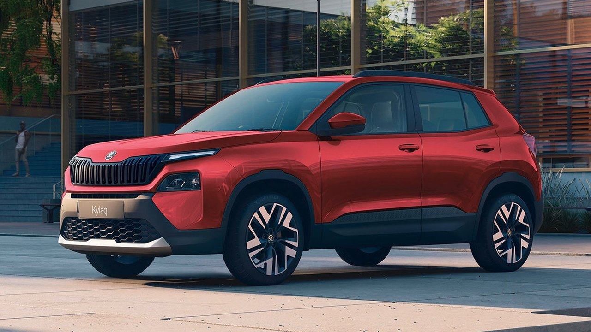
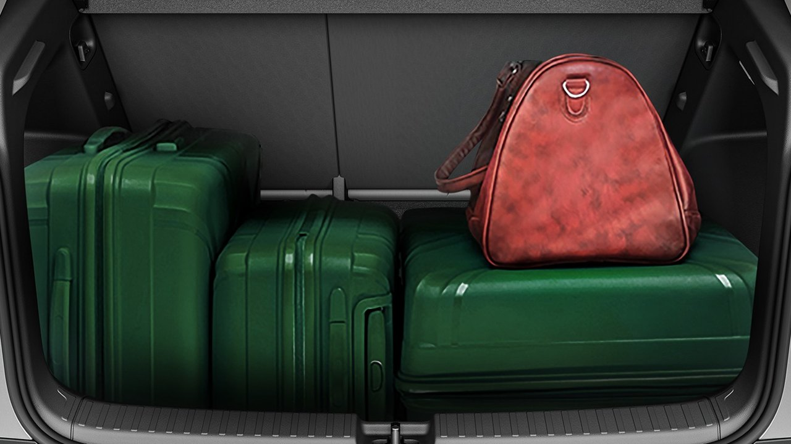
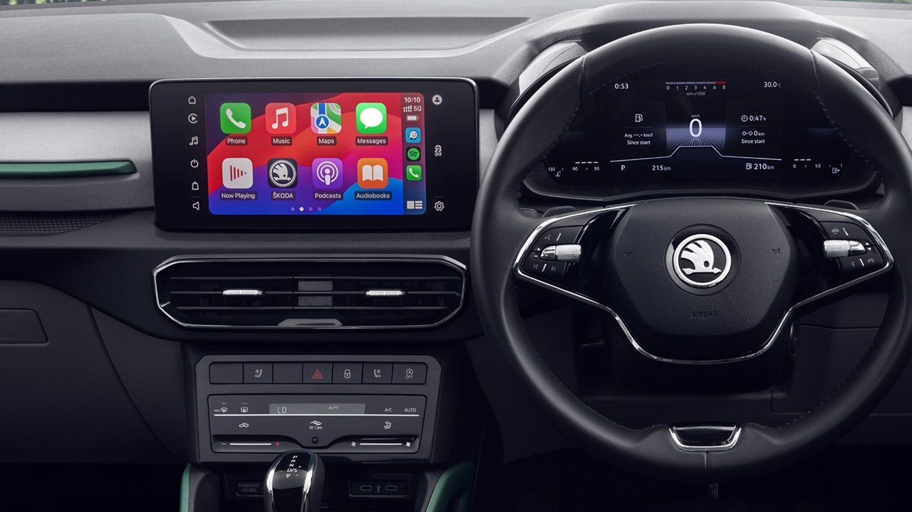
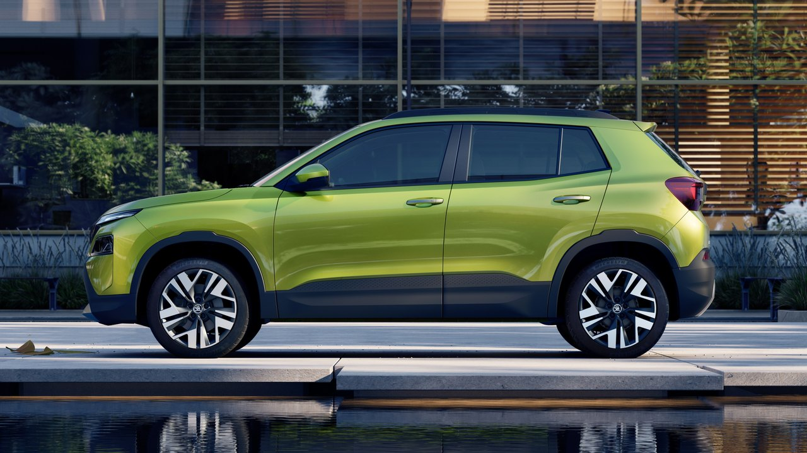
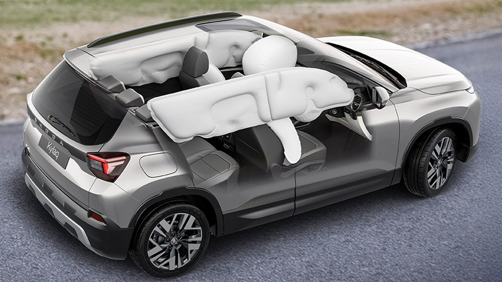
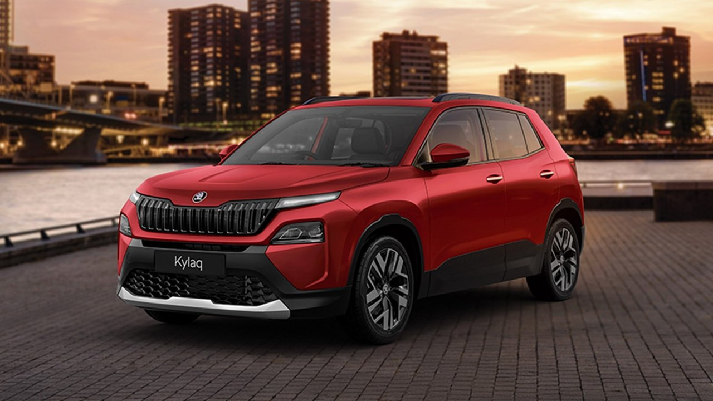

Kia Seltos 2026: Which Engine and Variant to Buy
By Gagan Mishra

The Kylaq now comes in seven trims, from the manual-only Classic to the Prestige+, with a Sportline added in August. It still has one engine, a 1.0-litre turbo-petrol, so choosing one comes down to gearbox and equipment.
This review uses Škoda India’s published specifications, the Bharat NCAP report, current listed prices and other publications’ drives and fuel tests, not our own test. Prices and specifications were checked on 21 November 2026. See our Review Methodology for how we separate editorial assessment from measured testing.
The Kylaq is a safe, enjoyable small SUV with a strong turbo-petrol engine, and the automatic is the version to buy for city driving. It is not the roomiest car in its class at the back, and published tests show city fuel use well below the claim. Start at Signature+ AT for the digital cluster and auto climate control. Pay for Prestige only if you want ventilated seats.
| Trim | Manual | Automatic |
|---|---|---|
| Classic | ₹7.59 lakh | — |
| Classic+ | ₹8.29 lakh | ₹9.29 lakh |
| Signature | ₹9.49 lakh | ₹10.49 lakh |
| Signature+ | ₹10.79 lakh | ₹11.79 lakh |
| Sportline | ₹11.35 lakh | ₹12.35 lakh |
| Prestige | ₹11.85 lakh | ₹12.85 lakh |
| Prestige+ | ₹12.09 lakh | ₹13.09 lakh |
Every Kylaq has the same engine, and the automatic costs ₹1 lakh more than the manual in each trim. The Classic is manual-only, so the Classic+ AT at ₹9.29 lakh is the cheapest way into a two-pedal Kylaq. Škoda added the Classic+, Signature+ and Prestige+ in January 2026 and the Sportline on 20 August 2026. The Sportline sits between Signature+ and Prestige.
The Kylaq looks like a proper small SUV without exaggeration. Slim LED headlamps sit above a black Škoda grille, chunky cladding runs around the wheel arches, and the tail-lamps are small T-shaped units. It is 3,995 mm long, 1,783 mm wide and 1,619 mm tall, with a 2,566 mm wheelbase and 189 mm of ground clearance. That keeps it under four metres while leaving room for a sensible cabin.
The trim decides how it looks. The Classic has 16-inch steel wheels, Classic+ and Signature move to 16-inch alloys, and the Prestige trims get 17-inch alloys. The Sportline adds black 17-inch wheels, black mirrors, skid plates and roof, a roof spoiler and projector LED headlamps.

Škoda quotes a 446-litre boot. That figure is measured to the roof. Autocar India points out that the space below the parcel shelf is 360 litres, which is the number to compare with rivals. With the rear seats folded, the claim rises to 1,265 litres, and there is a spare wheel under the floor.
The front seats are the high point. Autocar India found them comfortable, and its long-term test car’s ventilated seats were never too cold. The rear is tighter. Autocar India rated rear legroom average for the class and found the backrest upright and the seat shaped for two adults rather than three. Its later long-term report found the legroom decent, though tight for a passenger of 5 ft 10 in.

Six airbags, electronic stability control, hill-hold control and tyre-pressure monitoring are standard, and Škoda has given every trim, the base Classic included, automatic climate control and a rear defogger since August 2026. The Classic+ adds an electric sunroof, cruise control and alloy wheels. That makes it unusually well equipped for a second-from-base trim.
The touchscreen with wireless Android Auto and Apple CarPlay arrives with the Signature, and the Signature+ adds an 8-inch digital driver’s display. The Prestige and Prestige+ bring ventilated front seats, ambient lighting and wireless charging, and the Prestige+ adds six-way powered front seats. Autocar India notes what the Kylaq lacks against some rivals: rear disc brakes, driver-assistance systems, a 360-degree camera and a panoramic sunroof.

The only engine is the 1.0-litre three-cylinder TSI turbo-petrol from the Kushaq and Slavia.
| Engine | Power / Torque | Transmission Options |
|---|---|---|
| 1.0L TSI Turbo-Petrol (3-cyl) | 85 kW (115 PS) / 178 Nm | 6-speed Manual, 6-speed Automatic (torque converter) |
Autocar India found the engine lively once it passes 2,000 rpm, with noticeable turbo lag below that. Its preliminary tests timed 0–100 km/h in about 11 seconds for the manual and 11.9 seconds for the automatic. It also found the manual gearbox notchy with a heavy clutch, and the automatic smooth but slow to downshift. CarWale’s drive found the automatic quick and responsive in Sport mode.
| Version | ARAI Claim | Autocar India City | Autocar India Highway |
|---|---|---|---|
| 1.0 TSI Manual | 19.31 kmpl | 10.6 kmpl | 15.12 kmpl |
| 1.0 TSI Automatic | 19.05 kmpl | 8.7 kmpl | 13.36 kmpl |
The ARAI claims above are the figures CarWale and CarDekho list now. Some earlier reports quoted up to 19.68 kmpl. Autocar India’s real-world test, run in 30–36°C heat, returned far less, and CarWale measured 8.9 kmpl in the city for the automatic. Autocar India’s long-term car averaged only 6.8 kmpl on a short Mumbai commute. Expect city figures closer to those tests than to the claim.

This section draws on the published Bharat NCAP report and other publications’ drives, not our own, in line with our Review Methodology. Bharat NCAP gave the Kylaq five stars for both adult and child protection, with 30.88 out of 32 and 45.00 out of 49. The frontal offset test scored 15.04 out of 16 and the side barrier test 15.84 out of 16. The tested car was a Prestige manual weighing 1,489 kg, and the rating applies from January 2025 to the variants Bharat NCAP lists.
That is one of the strongest results for a car under ₹10 lakh, and it is the best reason to shortlist a Kylaq. The car has no driver-assistance systems, so the safety case rests on crash protection and the standard six airbags and stability control.

Following our Review Methodology, we rate eight criteria on paper, using official specifications, prices and published test evidence rather than our own driving, then average them into a Spec Score.
| Criteria | Score |
|---|---|
| Design | 8.0 / 10 |
| Performance | 8.0 / 10 |
| Mileage Potential | 6.5 / 10 |
| Comfort | 7.0 / 10 |
| Features | 7.5 / 10 |
| Safety | 9.0 / 10 |
| Practicality | 8.0 / 10 |
| Value for Money | 8.0 / 10 |
| Spec Score (average) | 7.8 / 10 |
Design: A tidy, confident small-SUV shape that does not rely on gimmicks.
Performance: A strong turbo-petrol, held back by low-speed lag and a slow automatic.
Mileage Potential: Published real-world tests sit far below the ARAI claims, especially in town.
Comfort: Comfortable front seats; the rear is best for two, and the backrest is upright.
Features: Sunroof and cruise from Classic+, but no ADAS, 360-degree camera or rear discs.
Safety: Five stars from Bharat NCAP, with 30.88/32 adult and 45/49 child scores.
Practicality: A useful boot, though the 360-litre figure below the parcel shelf is the fair comparison.
Value for Money: Well-equipped lower trims and an automatic from ₹9.29 lakh.
The Kylaq makes a clear case: proven crash protection, a lively engine and enough equipment for the money, in a body that is easy to park. It is less convincing as a family car for five, and its city fuel use in published tests is a long way from the claim. Buy it as a well-built, safe car for a couple or a small family. The Signature+ AT is the sensible stopping point. Choose Prestige only for the ventilated seats, and Sportline only for the look.

What is the price of the Skoda Kylaq in 2026?
CarWale and CarDekho list the Kylaq from ₹7.59 lakh (Classic manual) to ₹13.09 lakh (Prestige+ automatic), ex-showroom, in November 2026.
Which is the cheapest Kylaq automatic?
The Classic+ AT at ₹9.29 lakh ex-showroom. The base Classic is manual-only.
What is the Kylaq’s Bharat NCAP rating?
Five stars for adult and child protection, with 30.88 out of 32 and 45.00 out of 49.
What mileage does the Skoda Kylaq give?
Current listings give ARAI figures of 19.31 kmpl for the manual and 19.05 kmpl for the automatic. Autocar India’s real-world test returned 8.7–10.6 kmpl in the city and 13.36–15.12 kmpl on the highway.
Which Kylaq variant has a sunroof?
The electric sunroof is fitted from the Classic+ trim upwards.
How much boot space does the Kylaq have?
Škoda quotes 446 litres to the roof. Autocar India measures 360 litres to the parcel shelf.
More on the Kylaq: 5-Star Bharat NCAP Cars Under ₹10 Lakh
Links checked 21 November 2026. Driving impressions and fuel tests are from the publications named in the text. We have not driven this car.
By Gagan Mishra

By Gagan Mishra

By Gagan Mishra